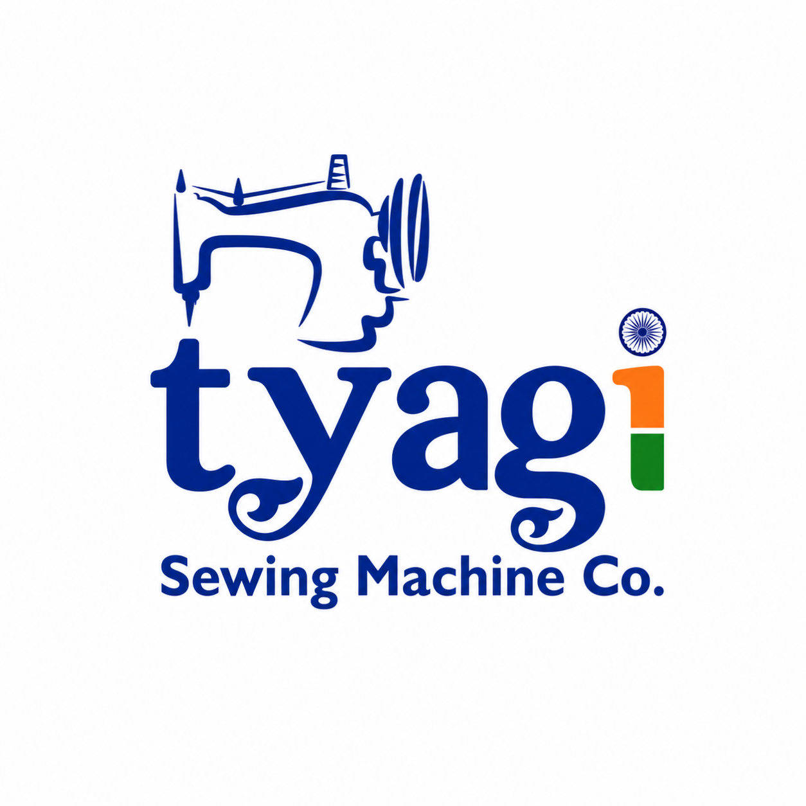
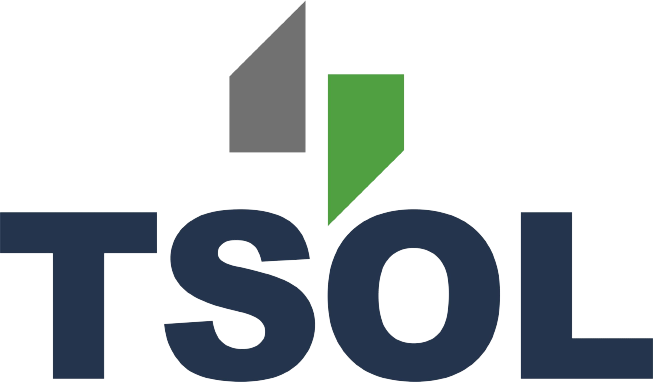

People first
Respectful communication and lasting customer relationships.

Presenting
Business. People. Progress.
I’m Vivek Kant, a Business Executive contributing to the growth and digital presence of Tyagi Sewing Machine Co. through branding, communication and customer engagement.
Clear communication · Thoughtful branding · Stronger connections
I believe good business is built through trust, consistency and the way people experience a brand.
My work centres on supporting the family business with a modern approach—bringing together product presentation, digital communication and customer relationships, while learning from the experience of the people who built it.
Respectful communication and lasting customer relationships.
Presenting products and information in a clear, professional way.
Exploring better ways to work, communicate and grow.
A practical mix of business support and digital work.
Supporting brand presentation, product posters, social media content and a consistent visual identity.
Helping make company information, product communication and online touchpoints easier to explore.
Supporting clear communication, customer feedback and business development initiatives.
Bringing a thoughtful eye to design and presentation, while keeping the business objective in focus.
I contribute to marketing, branding, digital presence, product presentation and customer engagement, working under the guidance of Mr. Rajni Kant.

MACHINE BRANDFor official products, specifications and catalogue information, visit the company website.
Use this demo form to preview how a feedback or concern submission could look. This version does not send or store messages.
Demo only
Do not enter private, financial or sensitive information. A secure submission system must be connected before launch.
For professional conversations, business-related questions or collaboration.